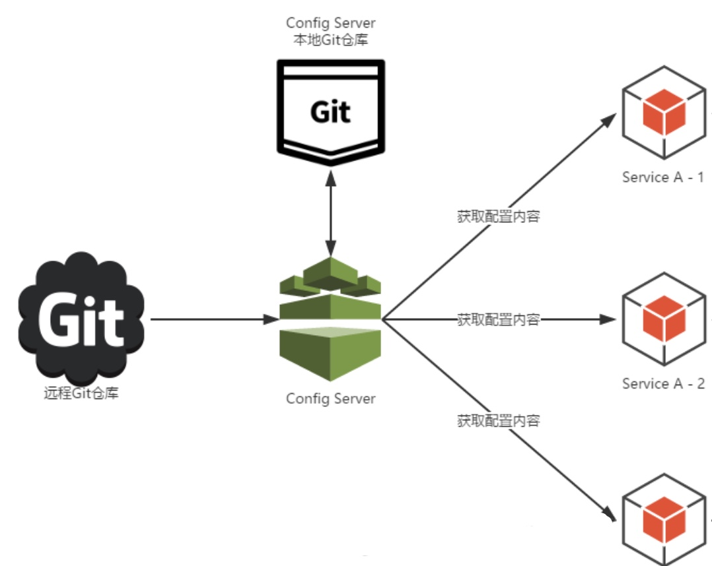
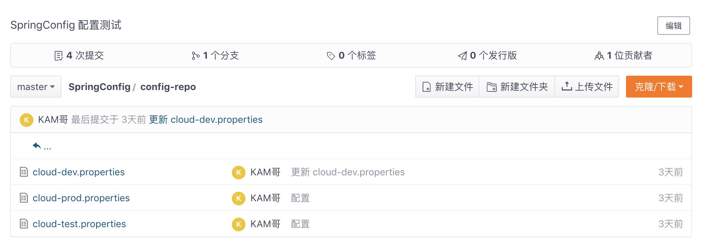
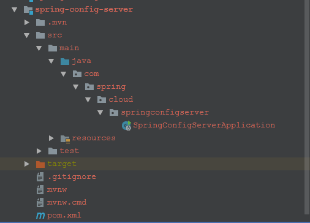
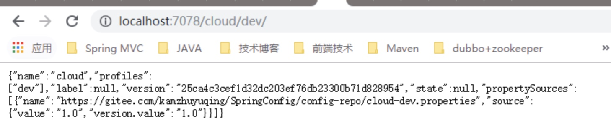
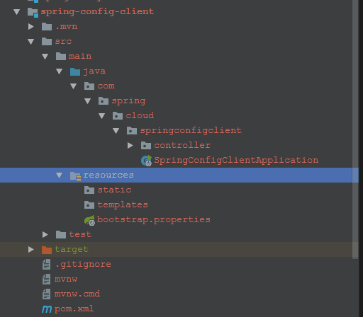
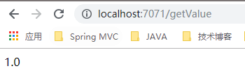

前言
Spring Cloud Config 用来为Spring Cloud 中的基础服务和微服务提供外部配置支持。分为客户端和服务端两个部分。Spring Cloud Config 默认提供采用Git来存储管理配置，也支持SVN 和 本地文件形式的存储。我们下面就来构建基于Git 的分布式配置中心。
总体架构
我们先来看一张简单的架构图(图片来源于网络):

其中图中包括以下几个要素:
1.远程Git 仓库: 用于存储配置文件，考虑到网络原因，这里我们用了gitee 作为远程Git仓库，提前在上面配置好了多个环境的配置文件,如图:
2.Config-server: 分布式配置中心，也就是上面我们提到的服务端的角色。负责从远程Git获取配置文件并缓存到本地Git仓库中，并为客户端(微服务)提供配置服务。
- 3.本地Git仓库: 配置中心从远程Git获取配置后，缓存在Git本地仓库，配置中心读取本地仓库的配置返回给客户端。并且在无法从远程仓库获取配置的时候，直接会从本地仓库返回。
- 4.ServiceA,ServiceB：相当于客户端的角色，指定了config-server的地址，请求config-server 获取自己想要的配置。
服务端: config-server
我们首先建一个模块 Spring-config-server

以下是主要配置:
1.maven pom.xml1
2
3
4
5
6
7
8
9
10
11
12
13
14
15
16
17
18
19<properties>
<project.build.sourceEncoding>UTF-8</project.build.sourceEncoding>
<project.reporting.outputEncoding>UTF-8</project.reporting.outputEncoding>
<java.version>1.8</java.version>
<spring-cloud.version>Finchley.SR1</spring-cloud.version>
</properties>
<dependencies>
<dependency>
<groupId>org.springframework.cloud</groupId>
<artifactId>spring-cloud-config-server</artifactId>
</dependency>
<dependency>
<groupId>org.springframework.boot</groupId>
<artifactId>spring-boot-starter-test</artifactId>
<scope>test</scope>
</dependency>
</dependencies>
2.在应用程序入口Application类加上注解 @EnabkeConfigServer
1 |
|
3.接下来我们配置application.properties1
2
3
4
5
6
7
8
9
10
11
12#服务名称
spring.application.name=config-server
#服务端口
server.port=7078
#远程git url
spring.cloud.config.server.git.uri=https://gitee.com/kamzhuyuqing/SpringConfig
#配置环境标识
spring.cloud.config.profile=dev
#相对路径
spring.cloud.config.server.git.search-paths=config-repo
#分支
spring.cloud.config.server.default-label=master
到这里，一个简单config-server 就完成了。启动 SpringConfigServerApplication 类,然后请求:http://localhost:7078/cloud/dev 如果能看到你配置在远程GitHub的内容信息，则说明config-server 配置成功。如下图

那地址中的cloud 和 dev 分别是什么意思呢，这里要着重解释一下:
url中的 /cloud/dev 会映射到远程Git仓库中的cloud-dev.properties 或者 cloud-dev.yml。因为上面我们使用的gitee存放的是前者，所以匹配到了cloud-dev.properties.
匹配规则有三个要素，分别是application(应用名称), profile(环境标识), lable(分支) (这个例子中 application为 cloud,profile为dev, label 为默认master):
url 中的/{application}/{profile}[/{lable}]匹配规则如下:
-1 当lable为空(也就是默认为master分支),则匹配到/{application}-{profile}.properties 或者 /{application}-{profile}.yml
-2 当lable不为空时(可以是其他分支)，则匹配到/{lable}/{application}-{profile}.properties 或者/{application}-{profile}.yml.
客户端
我们建一个客户端模块: Spring-config-client

以下是主要配置:
1.maven pom.xml1
2
3
4
5
6
7
8
9
10
11
12
13
14
15
16
17
18
19
20
21
22
23
24
25
26
27<properties>
<project.build.sourceEncoding>UTF-8</project.build.sourceEncoding>
<project.reporting.outputEncoding>UTF-8</project.reporting.outputEncoding>
<java.version>1.8</java.version>
<spring-cloud.version>Finchley.SR1</spring-cloud.version>
</properties>
<dependencies>
<dependency>
<groupId>org.springframework.boot</groupId>
<artifactId>spring-boot-starter-web</artifactId>
</dependency>
<dependency>
<groupId>org.springframework.cloud</groupId>
<artifactId>spring-cloud-starter-config</artifactId>
</dependency>
<dependency>
<groupId>org.springframework.boot</groupId>
<artifactId>spring-boot-starter-test</artifactId>
<scope>test</scope>
</dependency>
<dependency>
<groupId>org.springframework</groupId>
<artifactId>spring-core</artifactId>
<version>RELEASE</version>
</dependency>
</dependencies>
2.新建一个 bootstrap.properties (这里一定需要bootstrap.properties，不然应用无法读取)1
2
3
4
5
6
7
8
9
10#应用名称
spring.application.name=cloud
#config-server 的地址
spring.cloud.config.uri=http://localhost:7078/
#获取的配置环境标识
spring.cloud.config.profile=dev
#获取的配置的分支
spring.cloud.config.label=master
#服务端口
server.port=7071
3.新建一个Controller 类，用于读取properties 里面的属性1
2
3
4
5
6
7
8
9
10
11
12
13
14
15
16
17
18
19
20
21
22
23
24package com.spring.cloud.springconfigclient.controller;
import org.springframework.beans.factory.annotation.Autowired;
import org.springframework.beans.factory.annotation.Value;
import org.springframework.cloud.context.config.annotation.RefreshScope;
import org.springframework.core.env.Environment;
import org.springframework.stereotype.Controller;
import org.springframework.web.bind.annotation.RequestMapping;
import org.springframework.web.bind.annotation.RestController;
public class ConfigController {
("${value}")
private String value;
private Environment environment;
(value = "/getValue")
private String getValue(){
return environment.getProperty("value");
}
}
下面我们来启动SpringConfigClientApplication。访问http://localhost:7071/getValue 看是否能打印出我们读取的配置

如图所示我们客户端能成功拿到配置。
小结
这一节我们简单的把Spring Config 基于Git 的分布式配置完成了。当然这是最简单的一种形式。我们还可以将config-sever 注册到eureka上，然后config-client 作为消费者去消费服务。这些我们可以线下自己配置一下。我们主要了解了Spring-Config在SpringCloud微服务中是怎么样的一个角色，具体有什么作用就达到目的了。